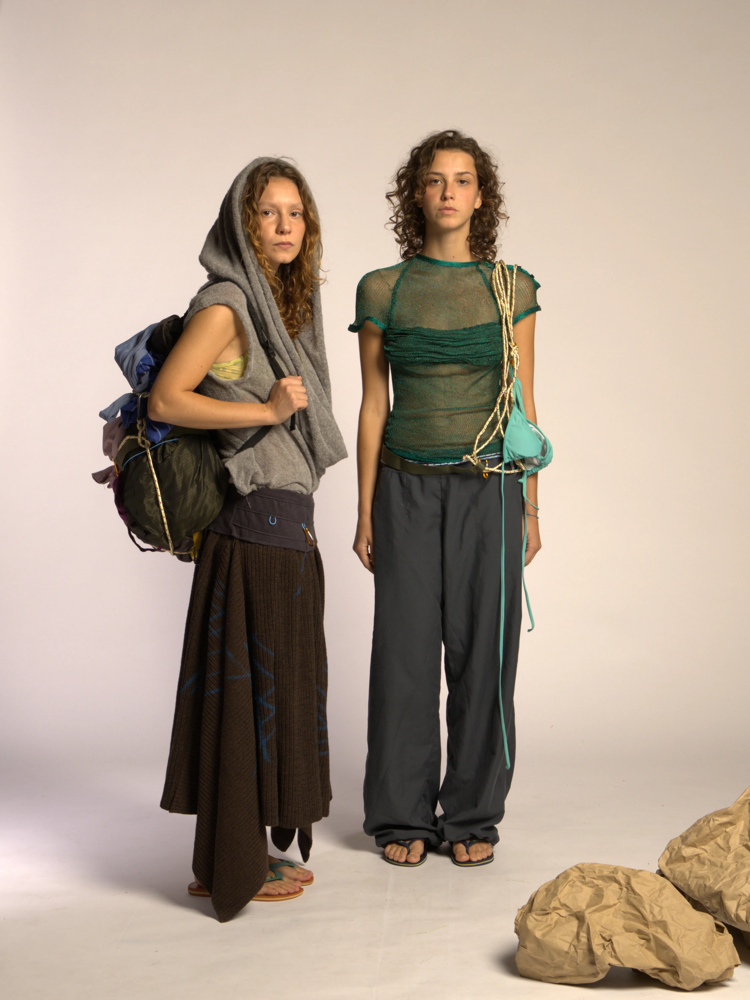
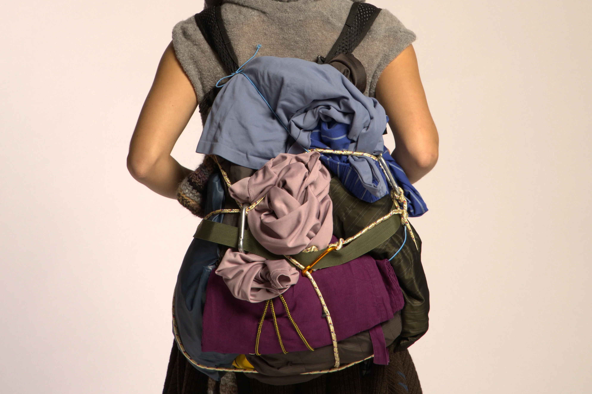

Knitwear & Experimental Design · 2026
Mare-Monti
Uno studio sulle forme geometriche reinterpretate attraverso materiali morbidi.
Year
2026
Category
Knitwear & Experimental Design
Techniques
Machine Knitting, Garment Construction, Draping

04 / 04
Where the sea meets the summit.
Concept
"Mari-Monti" explores the concept of contemporary nomadism and the fundamental human quest for security. Inspired by nomadic peoples who sustain essential values against a society driven by artificial needs, the project translates hard, architectural shapes into soft, protective structures. Through the study of the body in hostile environments, the garment becomes a wearable shelter: ensuring dynamic protection of the body in motion and offering a sanctuary during moments of stasis.
Technical Execution
Developed as a specialized knitwear project, the collection showcases a comprehensive approach to textile creation. Every piece was designed and crafted entirely from yarn. Using machine knitting techniques, the raw yarn was transformed into custom fabrics, which were then manually draped and constructed into the final garments, bridging the gap between raw material and finished design.
Aesthetic & Styling
The collection's title (translating to "Seas and Mountains") is reflected in the hybrid styling of the looks. The aesthetic thrives on sharp visual and functional contrasts: lightweight, summery elements like swimwear and sandals are layered against heavy, outdoor-inspired pieces such as structured skirts, chunky knit sweatshirts, and trekking backpacks. This duality represents the human ability to adapt to diverse ecosystems, carrying one's shelter across contrasting climates and terrains.